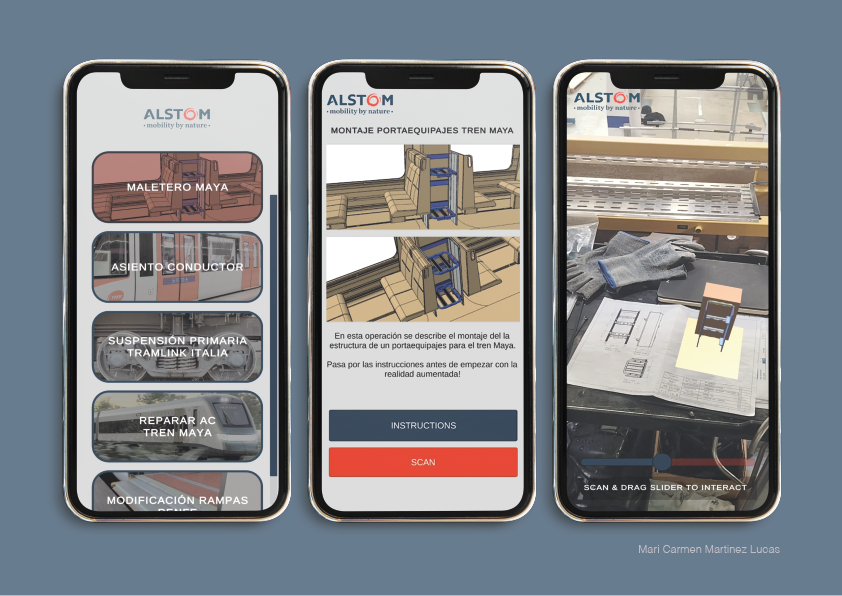

ALSTOM APP
AR INSTRUCTIONS IN THE INDUSTRY
Alstom APP is a Mobile Application to Guide Operators in Railway Industry Assemblies with 3D Augmented Reality Instructions. A project that combines technology and manufacturing to optimize industrial processes, reduce errors, and improve assembly times.
Using the cross-platform Unity game engine, I have developed a standard for interactive augmented reality instructions designed for assembly line operators in railway manufacturing plants. This solution not only enhances process comprehension but also leverages the tablets already available on-site to display AR, eliminating the need for expensive hardware. An intuitive and accessible tool that brings technology closer to manufacturing.

The app's functionality can be summarized as follows:
1. Select the installation.
2. Read the instructions before using augmented reality.
3. Scan the blueprint and use the slider to progress through the animation!
In the video, you can see the app in action. I hope you like it!
1.Research: In the first phase, I conducted a market study and analyzed the internal needs of both the company and the operators.
2.Conceptualisation phase: Once the idea was defined, I designed the interface and determined how the interaction with augmented reality would take place—specifically, through the blueprints used by operators in the workshop.
3.Embodiment phase: After defining the concept, I focused on the visual aspects of the app and the 3D models to be used. In this case, the example features a luggage rack for a train.
4. Animation & AR App:
Finally, the animation and movement of the components were created, allowing them to be controlled via the slider.
This site was created by Mari
 Back
Back